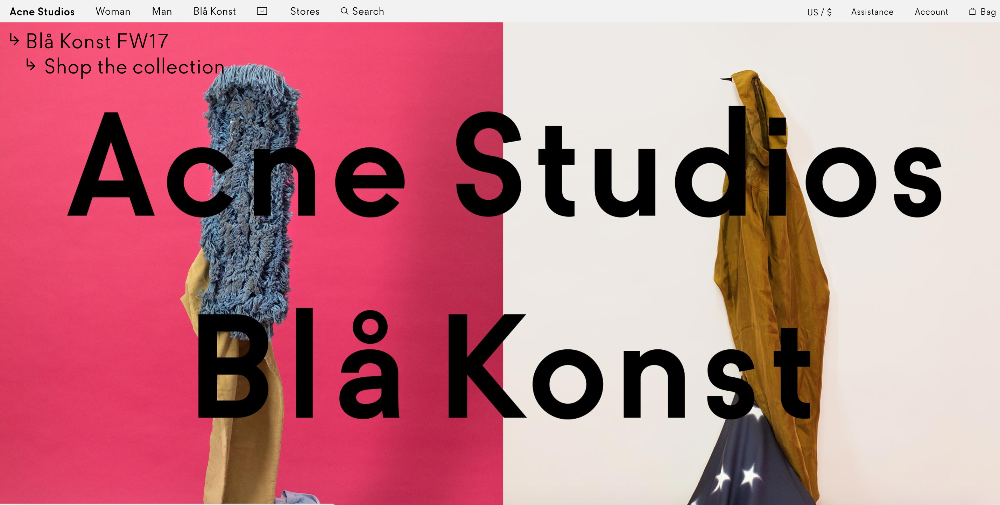
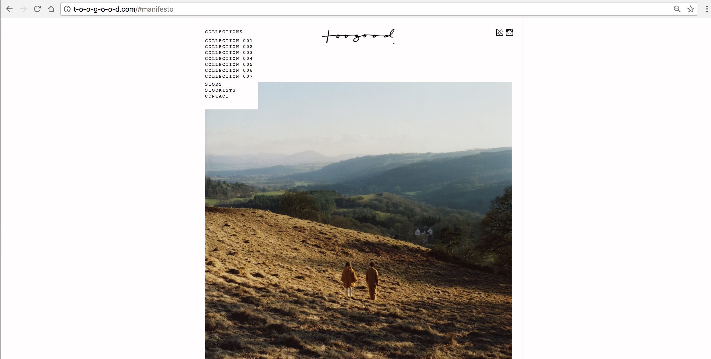

Website Comparison
A Successful Website
In terms of usability and visual effect, this official website acnestudios.com of a fashion brand called Acne Studios becomes my favorite one. Once I enter the home page, a visually strong and very Acne effect strikes my sense. On the home page, one of the latest collection’s poster displayed as the background with the bold black slogan “Acne Studios Bla Knost” , which in my opinion is very useful because the majority of people surly want to see the latest season first, and it provides a easy access to online shopping. When I roll down the homage page, different posters seamlessly connected to each other in either vertical or horizontal way leads to different shop categories, like pre-fall 2017, fw17 collection and so on. The homepage of this website is really successful because it clearly conveys the core content and as an avant-garde fashion brand fully presents its aesthetic. The design of tool bar really attracts me a lot. The typeface and graphic patterns are more like the flats drawing in fashion, which is really clean and clear. The layout of the shopping page is also easy to follow and the access to return is obvious. Two photos a page provides the visitor a clear presentation of its clothes with more details. The using of arrows besides every title better guides visitors to right page.
A Less Successful Website
Personally I love the brand -- toogood a lot, but I found out that the website t-o-o-g-o-o-d.com messes up Toogood's creativity. All the information that the website offers are on home page, if visitors keep rolling down the home page, they could browse everything. However, the order of these information makes the big mistake. This website does not have any entry to online shop which determines that the main purpose of the website is not for selling products. People who are not familiar with this brand might want to see the introduction of the brand first and then the clothes especially every collection of this brand does not labeled as season but number. People will get confused about every collection. The text of the explanation is too small to read. Once I click the “collection 001” located at the tool bar, it leads to a page of pdf file without any web design elements. However, the layout of putting everything in the center of the page is visually consistent and clean. After browsing this website, I feel like I’d rather look at the instagram account of this brand.
